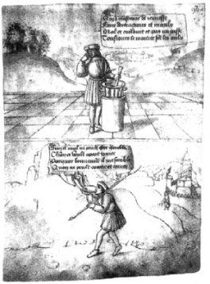

ŞEKİL 29. ”Havan, daima sarmısak kokar!”: Resimlerle sunulan atasözleri dizisinden 16. yüzyıla ait bir çizim (Recueil de 131 tableaux et figures adlı eserden; Bibliothèque de l’Arsenal, Paris).45
Lonitzer’in sözü edilen eserinde adı geçen ilaçlardan biri, kireç ve magnezyum fosfattan yapılı olan ve geviş getiren hayvanlardan keçi ve geyiklerin mide ve bağırsaklarında oluşan bezoar taşı (“bezoar orientalis”, “lapis bezoar”, panzehir taşı) idi (ŞEKİL 30). En iyi ve gerçek bezoarın (< Fars. “pâd-zehr”: panzehir, zehir-karşıtı) “Capra aegagrus Gmel. / “Capra bezoartica L.” türü oryantal keçiden (bezoar keçisi) elde edildiği söylenmektedir. Bu taşların zehirlere karşı mucizevî bir panzehir olduğuna inanılıyor ve sıklıkla da şarapla zehirlemeye karşı kullanılmak üzere kadehler içine toz halinde konuyordu. Bezoar kullanımı, 12. yüzyıldan itibaren Avrupa’da moda olmuştu. Fransa Kralı XIV. Louis (yön. 1643-1715) döneminde iyi bir pazar bulmuş ve aynı büyüklükteki elmasın 50 katına varan fiyatlarla satılır olmuştu. İngiltere’de bunu satın alamayan fakir hastalar, Kraliçe I. Elizabeth (1533-1603) döneminde onu kiralamanın yollarını bularak bir altın yuva içine yerleştirilmiş panzehir taşı bulunduran kolyeleri geçici olarak taşır olmuşlardır. İran şahı, pek çok hastalığını iyileştirmesi niyetiyle İmparator I. Napoléon’a (Bonaparte) (İmp. 1804-1814) dört adet panzehir taşı armağan etmiştir. Lonitzer’in bu eseri çok satmış ve 250 yıl boyu “bestseller”lerden biri olmuştur.49